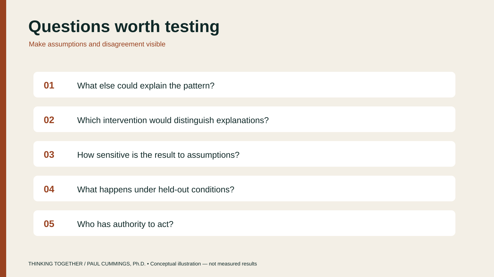
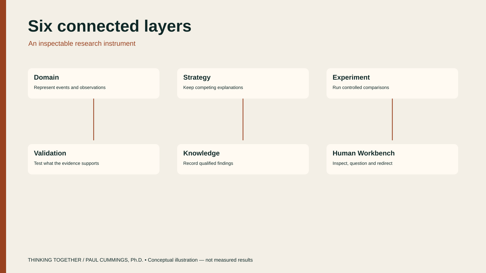
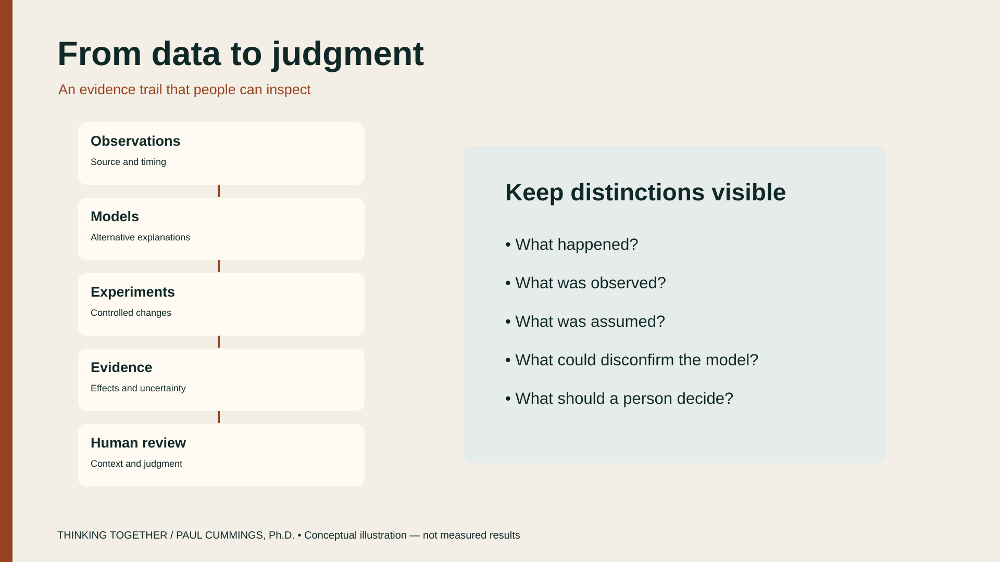
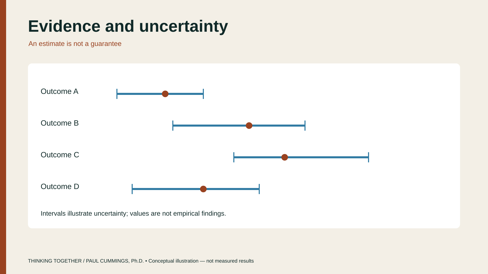

The research
Explore the ideas
The work is about using computation to understand opaque AI systems: probe behavior, keep alternatives visible, and validate claims — without treating model fluency as truth.

CoAgentics
CoAgentics is the inspectable workbench behind these ideas — an instrument for opening the AI black box through structured inquiry: domain, strategy, experiment, validation, knowledge, and a human workbench. Models may organize or explain evidence drawn from authoritative records. They cannot manufacture observations, statistical significance, simulation outcomes, or approval. Missing evidence stays missing. See the book’s CoAgentics section.



Diagrams are conceptual illustrations, not measured experimental results.


- Shared inquiry Fast recognition can open a question. Deliberate examination turns it into a claim, alternatives, evidence, and a test.
- A represented world Domain records what was observed, when, from where, and with what confidence. Strategy keeps competing explanations tied to the evidence that could distinguish them.
- Tests that stay conditional An experiment shows what changes inside the assumptions of the model. Validation asks whether that result has earned belief outside those conditions.
- Memory outside the chat Knowledge is an auditable record of claims, evidence, contradictions, and provenance. The next question should be able to use that history.
- Heuristics people can carry When a pattern of checks can be formalized, bounded, and taught, it can become a human strategy rather than a one-time machine answer.